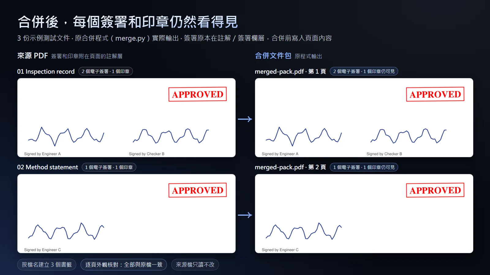

← 全部作品／ 文件資料
文件資料 · 作品個案
PDF 合併：保留每個電子簽署
這個工具專為解決這問題：合併後每個簽署和印章仍然看得見。
- 來源
- 文件包的來源 PDF 帶有大量電子簽署和印章。
- 問題
- 用一般方法合併後，簽署會在合併檔中消失。


成果合併文件包 · 簽署全部可見
§ 重點
一眼看懂
- 要解決
來源 PDF 帶電子簽署和印章，它們是附在頁面上的欄位和註解。
- 流程
- 問題每份來源 PDF 由不同人電子簽署或蓋章。
- 原因電子簽署和印章是附在頁面上的簽署欄和註解，不是頁面內容本身。
- 做法合併前先列出每份檔案的簽署欄數目。
- 整理與自我檢查按檔名建書籤，可統一紙張、方向及加頁碼。
- 工具
- Python
- PyMuPDF
§ 問題問題與限制
- 來源 PDF 帶電子簽署和印章，它們是附在頁面上的欄位和註解。
- 合併後簽署必須看得見；來源檔不可以被改動。
- 加密檔、尺寸不一、方向不一的頁面都會出現。
§ 做法做法細節
結果：收件人打開一個文件包，就能看到所有簽署和印章，不用再逐份打開原檔。
- 限制
- 照實寫明，簽署在合併檔中已成為頁面圖像的一部分，不再是可驗證的數碼簽署。
- 驗證
- 驗證數碼簽章時應使用原始已簽 PDF。
工具
- 介面
- tkinter 桌面工具，以 PyMuPDF 處理 PDF；不用模型，結果可重複。
- 排序
- 按檔名自然排序（2 排在 10 之前），可選頁範圍。
- 紙張
- 偵測每頁紙張大小和方向，可統一成同一紙張。
- 頁碼
- 可在每頁加頁碼，並按檔名自動建書籤。
問題
每份來源 PDF 由不同人電子簽署或蓋章。用一般方法把它們合成一個文件包後，簽署在合併檔中消失，收件人看不到誰已簽。
原因
電子簽署和印章是附在頁面上的簽署欄和註解，不是頁面內容本身。合併時這一層若沒有一併帶過去，或被重新處理，簽名便不再顯示。
做法
- 先數
- 合併前先列出每份檔案的簽署欄數目。
- 寫入
- 再以 PyMuPDF 對每份來源執行 bake(annots=True, widgets=True)，把簽署和印章的外觀寫進頁面內容，然後才插入合併檔。
- 保護
- 來源檔只讀不改，加密檔會拒絕處理。
整理與自我檢查
- 整理
- 按檔名建書籤，可統一紙張、方向及加頁碼。
- 縮放
- 縮放時自行包裹內容流，避免已寫入的簽署被推出縮放範圍。
- 自查
- 最後逐頁比較合併前後的縮圖，差異明顯的頁面列出給人覆核。
架構：模型、程式與人手的分工
- 程式讀取與拒絕
逐份打開；加密檔直接拒絕，單份失敗不影響其餘。
- 程式參考縮圖
合併前把每頁渲染成 36 dpi 縮圖。
- 程式寫入外觀
bake(annots=True, widgets=True)：簽署和印章外觀寫進頁面內容。
- 程式合併與書籤
insert_pdf 後按檔名建書籤；可統一紙張和加頁碼。
- 程式逐頁核對
合併檔每頁與參考縮圖比較，平均像素差超過 0.5 就列出。
- 人手覆核
列出的頁面交人打開檢查。
關鍵決定與取捨
採用簽署外觀寫進頁面
不採用保留可驗證的數碼簽署
收件人一個文件包就看到全部簽署；代價是合併檔內的簽署不可再驗證，驗證要用原檔。
採用不用模型
不採用以 AI 判斷頁面
規則清楚、結果要可重複，用確定性程式即可。
採用縮放時自行包裹內容流
不採用用現成 wrap_contents
寫入外觀後的內容流以 Q 開頭，現成包裹會把簽署推出縮放範圍。
採用縮放、旋轉或加頁碼後略過逐頁核對
不採用照樣比較
外觀必然不同，比較沒有意義；記錄中會寫明已略過。
# merge.py：先留參考縮圖，再把簽署外觀寫進頁面，最後才合併
s = pymupdf.open(f)
if s.is_encrypted:
raise ValueError("檔案有密碼保護") # 不處理加密檔
r = thumbs(s) if self.verify.get() else [] # 36 dpi 參考縮圖
s.bake(annots=True, widgets=True) # 簽署欄位／註解 → 頁面內容，保留外觀
merged.insert_pdf(s) # 來源檔只讀，不會被儲存
# 存檔後逐頁核對：與原頁縮圖的平均像素差 > 0.5 就列出交人覆核
a = np.frombuffer(chk[pos].get_pixmap(dpi=36).samples, np.uint8)
if a.shape != r.shape or abs(a.astype(np.int16) - r.astype(np.int16)).mean() > 0.5:
mism.append(f"{ok[fi]}（第 {pos + 1} 頁）")§ 結果實際成果
合併文件包後簽署全部可見：收件人打開一個文件包，就能看到所有簽署和印章。
評估
- 0.5
逐頁核對門檻：36 dpi 縮圖的平均絕對像素差。
§ 限制失敗情況與防護
| 可能出錯 | 防護 |
|---|---|
| 加密檔 | 拒絕處理並寫入記錄。 |
| 單份檔案損壞 | 記錄失敗原因，繼續合併其餘檔案。 |
| 縮放把簽署推出頁面 | 自行包裹內容流。 |
| 合併後外觀走樣 | 逐頁像素比較，列出交人覆核。 |